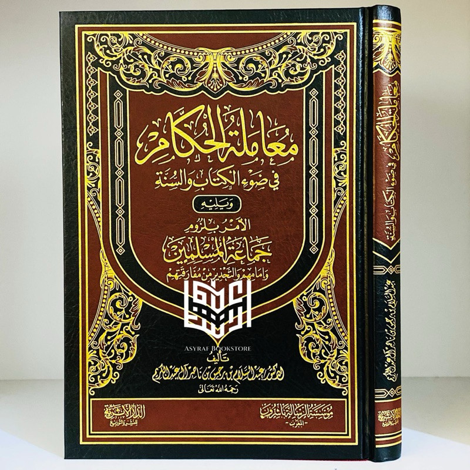
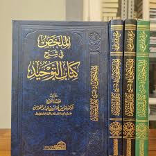

Buku ini menceritakan perjalanan hidup Alif, seorang anak Minang yang menempuh pendidikan di pondok pesantren Madani.
Awalnya penuh keraguan, namun perlahan Alif menemukan makna perjuangan, persahabatan, dan kekuatan impian.
“Man Jadda Wajada – Siapa yang bersungguh-sungguh, dia akan berhasil.”
Kalimat itu menjadi semangat utama dalam buku ini. Kisah yang ditulis berdasarkan pengalaman nyata ini sangat menginspirasi,
terutama bagi pelajar yang sedang mengejar mimpi mereka. Penulis berhasil menyampaikan pesan-pesan moral melalui narasi yang hidup.
Buku ini cocok dibaca oleh remaja dan orang dewasa yang sedang mencari motivasi hidup. Cerita persahabatan, perjuangan, dan cinta belajar
membuatnya menyentuh dan relevan bagi pembaca di berbagai usia.
★★★★★
Bedah Buku: Tafsir As-Sa‘di
Ditulis oleh:Syaikh Abdurrahman bin Nashir As-Sa'd
Kitab Tafsir As-Sa‘di adalah kitab tafsir Al-Qur’an yang sangat terkenal karena bahasanya ringkas, jelas, dan mudah
dipahami, sehingga cocok untuk pelajar, mahasiswa, maupun masyarakat umum.
“Tafsir As-Sa‘di menuntun pembacanya untuk memahami Al-Qur’an dengan hati yang tenang, akidah yang lurus, dan tujuan pengamalan yang jelas.”
“Tafsir As-Sa‘di adalah kitab tafsir Al-Qur’an yang disusun secara ringkas, jelas, dan mudah dipahami, dengan fokus pada makna ayat, akidah,
serta pengamalan dalam kehidupan sehari-hari.”
“Tafsir As-Sa‘di cocok digunakan oleh pelajar dan masyarakat umum, dipelajari sendiri atau bersama guru, kapan saja
untuk memahami makna Al-Qur’an dengan mudah.”
★★★★★
Bedah Buku: Mutun Aqidah Wasatiyah
Ditulis oleh:Syaikhul Islam Ibnu Taimiyah
Kitab Aqidah Al-Wasithiyah adalah kitab akidah karya Syaikhul Islam Ibnu Taimiyah yang menjelaskan
akidah Ahlus Sunnah wal Jama‘ah secara ringkas, tegas, dan berlandaskan
Al-Qur’an serta Sunnah, khususnya dalam masalah tauhid dan sifat-sifat Allah.
Aqidah Al-Wasithiyah adalah fondasi akidah Islam yang lurus, seimbang, dan berlandaskan Al-Qur’an serta Sunnah.”
“Aqidah Al-Wasithiyah adalah kitab karya Ibnu Taimiyah yang menjelaskan akidah Ahlus Sunnah wal Jama‘ah
secara ringkas, jelas, dan berlandaskan Al-Qur’an serta Sunnah.”
“Kitab Aqidah Al-Wasithiyah cocok untuk pelajar dan penuntut ilmu, dipelajari bersama guru atau dalam kajian,
terutama saat mempelajari dasar-dasar akidah Islam.”
★★★★★
Bedah Buku: kitab hadits shahih bukhari
Ditulis oleh:Imam Bukhari
Shahih al-Bukhari adalah kitab hadis paling sahih setelah Al-Qur’an, disusun oleh Imam al-Bukhari
dengan standar periwayatan yang sangat ketat. Kitab ini menghimpun hadis-hadis Rasulullah ﷺ yang mencakup akidah,
ibadah, dan adab, serta menjadi rujukan utama umat Islam sepanjang masa.
صحيح البخاري هو أصحُّ كتب الحديث بعد القرآن الكريم، جمعه الإمام محمد بن إسماعيل البخاري بمنهجٍ دقيقٍ وشروطٍ صارمة، ويُعدُّ مرجعًا أساسيًا للمسلمين في معرفة سنّة النبي ﷺ.
kitab hadis paling shahih setelah Al-Qur’an, disusun dengan standar periwayatan paling ketat,
dan menjadi rujukan utama ulama dalam menjaga Sunnah Nabi ﷺ.
dipelajari sepanjang waktu, terutama bagi penuntut ilmu dan kaum muslimin yang ingin memahami Sunnah Nabi ﷺ secara sahih.
★★★★★
Bedah Buku: kitab hadits shahih muslim
Ditulis oleh:Imam muslim
Keaslian Tinggi: Imam Muslim menyeleksi hadis dari sekitar 300.000 riwayat yang ia kumpulkan selama perjalanannya, dan hanya memasukkan hadis yang memenuhi syarat ketersambungan sanad serta kredibilitas perawi yang sangat ketat.
Jumlah Hadis: Terdapat sekitar 7.563 hadis termasuk pengulangan. Jika tanpa pengulangan (mukarrar), jumlahnya diperkirakan sekitar 3.030 hadis.
صحيح مسلم هو أحد أهم كتب الحديث النبوي عند المسلمين، صنفه الإمام مسلم بن الحجاج النيسابوري. يعتبر الكتاب ثاني أصح الكتب بعد القرآن الكريم وصحيح البخاري، ويشكل مع البخاري ما يسمى بـ "الصحيحين".
kitab hadis paling shahih setelah Al-Qur’an, disusun dengan standar periwayatan paling ketat,
dan menjadi rujukan utama ulama dalam menjaga Sunnah Nabi ﷺ.
dipelajari sepanjang waktu, terutama bagi penuntut ilmu dan kaum muslimin yang ingin memahami Sunnah Nabi ﷺ secara sahih.
★★★★★
Bedah Buku: kitab nawaqidul islam
Ditulis oleh Syaikh Muhammad bin Abdul Wahhab.
Membahas 10 poin utama perbuatan atau keyakinan yang dapat membatalkan keislaman seseorang dan membuatnya murtad dari agama.
Tujuan: Memberikan peringatan kepada kaum Muslim agar waspada dan tidak terjerumus ke dalam tindakan yang merusak iman tanpa disadari
تحذير المسلم من الوقوع في الشرك والردة، ليبقى على توحيد خالص لله عز وجل
Membahas 10 poin utama perbuatan atau keyakinan yang dapat membatalkan keislaman seseorang dan membuatnya murtad dari agama.
dipelajari sepanjang waktu, terutama bagi penuntut ilmu dan kaum muslimin yang ingin memahami pembatal-pembatal keislaman.
★★★★★
Bedah Buku: kitab muamalatul hukkams
itulis oleh Syaikh Dr. Abdussalam bin Barjas bin Nashir Alu Abdul Karim.

Membahas 10 poin utama perbuatan atau keyakinan yang dapat membatalkan keislaman seseorang dan membuatnya murtad dari agama.
Tujuan: Memberikan peringatan kepada kaum Muslim agar waspada dan tidak terjerumus ke dalam tindakan yang merusak iman tanpa disadari
تحذير المسلم من الوقوع في الشرك والردة، ليبقى على توحيد خالص لله عز وجل
Membahas 10 poin utama perbuatan atau keyakinan yang dapat membatalkan keislaman seseorang dan membuatnya murtad dari agama.
dipelajari sepanjang waktu, terutama bagi penuntut ilmu dan kaum muslimin yang ingin memahami pembatal-pembatal keislaman.
★★★★★
Bedah Buku: kitab at-tawheed
itulis oleh Syaikh Dr. Abdussalam bin Barjas bin Nashir Alu Abdul Karim.

Membahas 10 poin utama perbuatan atau keyakinan yang dapat membatalkan keislaman seseorang dan membuatnya murtad dari agama.
Tujuan: Memberikan peringatan kepada kaum Muslim agar waspada dan tidak terjerumus ke dalam tindakan yang merusak iman tanpa disadari
تحذير المسلم من الوقوع في الشرك والردة، ليبقى على توحيد خالص لله عز وجل
Membahas 10 poin utama perbuatan atau keyakinan yang dapat membatalkan keislaman seseorang dan membuatnya murtad dari agama.
dipelajari sepanjang waktu, terutama bagi penuntut ilmu dan kaum muslimin yang ingin memahami pembatal-pembatal keislaman.
★★★★★
Bedah Buku: ragam Indonesia
itulis oleh Syaikh Dr. Abdussalam bin Barjas bin Nashir Alu Abdul Karim.
Indonesia kaya akan keragaman budaya, bahasa, alam, agama, dan kuliner. Lebih dari seribu suku bangsa dengan tradisi unik, ratusan bahasa daerah, serta kekayaan alam dari pegunungan hingga laut. Semua ragam ini menjadi identitas dan kekuatan bangsa.
Indonesia kaya akan ragam budaya, bahasa, alam, agama, dan kuliner. Lebih dari seribu suku bangsa dengan tradisi unik, ratusan bahasa daerah, serta kekayaan alam dari pegunungan hingga laut. Semua keragaman ini menjadi identitas dan kekuatan bangsa.
Ragam Indonesia adalah kekayaan yang membuat bangsa ini unik, penuh warna, dan menjadi identitas yang patut dibanggakan.
★★★★★
Bedah Buku: kitab arbain an-nawawi
disusun oleh Imam Nawawi (Yahya bin Syaraf an-Nawawi, 631–676 H).
Arbain Nawawi adalah kumpulan hadits ringkas yang menjadi pedoman dasar bagi umat Islam dalam beribadah dan berakhlak, serta sering dijadikan bahan hafalan dan kajian di pesantren maupun majelis ilmu.


.jpg)
.jpg)